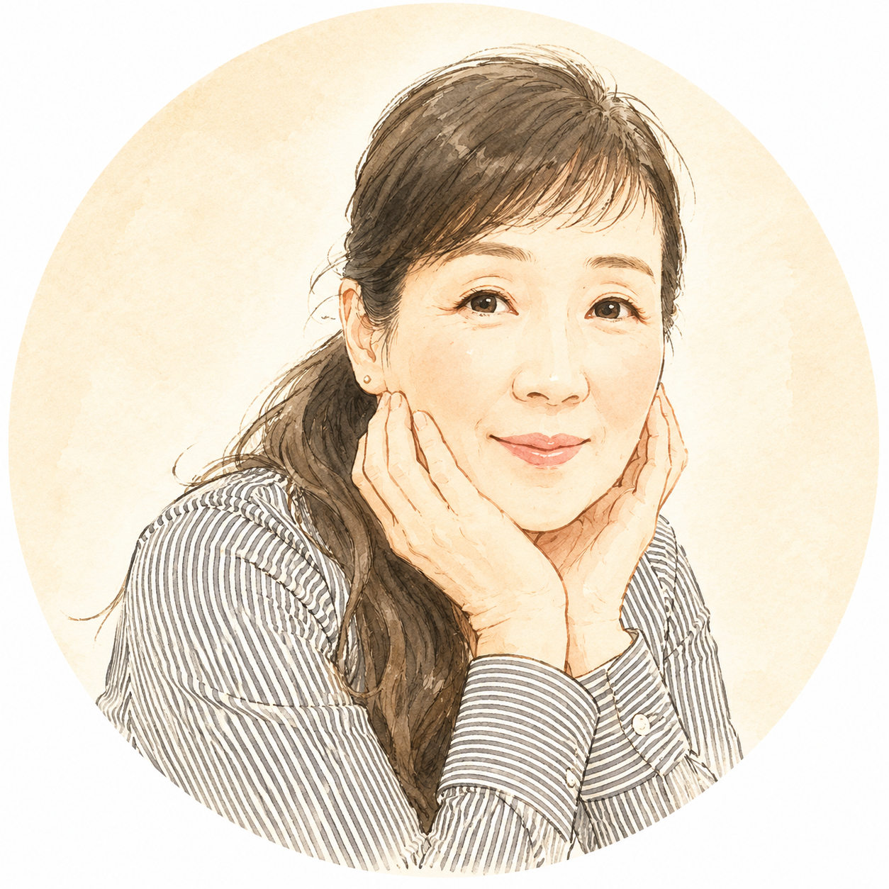

長年ちゃんと頑張ってきた。
でも、いつの間にか静かに諦めていた。
信じ切れないけど、変わりたい。
そんなあなたに届けたい。
「本当かな？と思ってた」元理科教師が、
論理で納得して、少しずつ整ってきた。
EMPATHY
TRANSFORMATION
PROFILE

ちば順子です。
元中学校の理科教諭として33年間、白衣を着て
「なぜだろう→予想→実験→考察」を
子どもたちと繰り返してきました。
だから私は、何でもすぐには信じられない。
「根拠は？」「単位はヘルツ？（笑）」
引き寄せも、波動も、インナーチャイルドも
ずっと「本当かな」と思っていました。
でも今は、どれも「嘘だ」とは言えない。
むしろ「そうかもね」と思っています。
そして気づいたんです。
ずっと心の奥に、こんな声があったことに。
「私の人生、このまま終わりたくない。
私らしく、納得して生きたい。
でも……どうすればいいの？」
この声を無視できなくなったのが、60歳でした。
「ねばならない」「こうすべき」
「嫁ならこうしなくちゃ」——
そんな縛りの中で生きてきた。
というより、忙しくて感じないようにしてきた。
私が変わったきっかけは、
中庸思考（中庸道™️）との出会いです。
「自分がこうしたい！」と思えて、
決めて動いている自分が好きになれた。
60歳から、そんな変化が起きたんです。
VOICE
SERVICE
あなたに合ったペースで、一緒に進みます。
詳しい内容はLINEでお伝えします。
「私の人生、このままで終わりたくない」
そう思っているなら、まず話してみてください。
「信じ切れないけど、気になる」
「変わりたいけど、どこから始めればいいかわからない」
そんな方も、大歓迎です。
登録後すぐに売り込みはしません。
まずあなたの話を聞かせてください。
いつでも退会できます。